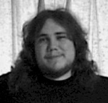

Joe Barlow is a freelance writer who turned to film criticism after
realizing his gross incompetence in everything else. A screenwriter and
filmmaker, Joe won a small degree of national attention when his first
cinematic offering, a spoof of The Wizard of Oz and The Blair
Witch Project entitled The Wicked Witch Project,
was featured on television and in newspapers from coast to coast. He is
the author of 100
Nights in the Dark: A Collection of Contemporary Film Reviews and
Essays, which should be available from your local bookstore (ISBN:
0-595-16391-2).
When he’s not laughing his way through Joel Schumacher movies, Joe enjoys
reading, playing guitar, and worrying about all kinds of evil things he
can’t change, such as death, taxes, and the frightening success of Pauly
Shore. Although he’s been known to lord his immense collection of
Mystery Science Theater 3000 memorabilia over anyone he thinks will
be impressed by it, Joe is also an avid collector of Hitchcock and
Kurosawa laserdiscs and DVDs.
Joe lives in Pennsylvania with his wife and their identical twin sons. He
can be contacted through his website, Joe Barlow on Film.